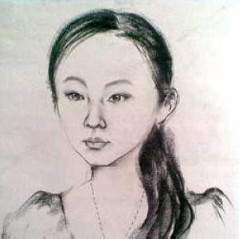

09全国五子棋锦标赛N宗最（更新中，也希望大家补充）
#1 09全国五子棋锦标赛N宗最（更新中，也希望大家补充）作者：黄药师 发表时间：2009-10-7 15:45:18
这次本人有幸现场参加了全国五子棋锦标赛的裁判工作，尽管还是实习阶段 ，但是场内场外看到不少意思的东东：
，但是场内场外看到不少意思的东东：
穿着最正式的：李一（西装+衬衫+领带，屏蔽老师不热吗？ ）
）
“打扮”最精心的：陈亮（头发锃亮，穿着一丝不苟）
装扮最酷的：祈观（墨镜，然后把衣服顶头上，整个一个阿拉伯人）
装扮最诡异的：王晓（每次进场都把帽子戴上，整个一巫师嘛！白天就算了，晚上不要出来吓人啊）
最显大师风范：顾炜（无论输赢，举手投足均显大师风范）
最诡异的笑容：李一（在和张轶峰对局的时候，开了云月然后向对方诡异一笑，交换后走出白四，再次诡异一笑，估计张轶峰被笑毛了，结果没有杀出来。 ）
）
最彪悍的对局：吴镝VS杨彦希（话说他俩对局的时候我再旁边想瞄几眼棋局，结果发现难找到空隙，两个人的身躯也太庞大了 ）
）
最郁闷的人：陈戈（都是香烟惹的祸）
最诡异的手机：张冬（明明已经关机了，结果比赛过程又响了，白白吃了一个违例。）
最冷酷的选手：龚胜（我只看到此人笑过一次，那就是“有志，给我弄一个超级管理员吧”…… ）
）
最好动的选手：艾显平（在“看大门”期间，看到此君的次数最多了）
计算速度最快：艾显平（理由？需要吗？）
最大冷门：佟明宇逼和吴镝（大鱼看了又要多抽几根烟了）
最客气的选手：魏强（此君在我“看大门”期间，只要一看到我就发烟，最后实在忍不住了问之，答曰“每次看到你，我都赢，你在场内时我都输”原来如此）
最玩命的选手：兰志仁（人家都“喷血了”你还要怎样？）
最“不老实”的选手：张钟元（某局，开瑞星，对方交换，白四后对方2 打无一正确，结果小张同学轻松抓了对方禁手，出了赛场我说“这局太轻松了对方瑞星打点都不会”答曰“其实我也不会，乱下的”……全国第三会瑞星二打不会吗？少忽悠人了 ）
）
最敢打敢拼的：王轩 朱立巍（从儿童组杀到成人组，没有垫底就说明一切了）
最爱持久战的：贺骞（如果我没有记错此君至少有4盘棋和对手杀得难解难分）
最激烈的拍钟：李洁VS王烨林 （依稀记得最后王烨林时间领先，眨眼之间，李洁就用以4秒的微弱优势拍赢了，惨烈啊~~~）
最名不副其实：王烨林（狮子？？？吓我一跳 ）
）
最漂亮的裁判：贺加贝（话说回来，你的这个头像感觉有点可怕。）
最忙碌的裁判：有志（场内裁判，场外整理棋谱，话说各位高人的记谱实在不敢恭维，让有志看得眼睛都花了）
最牛X的实习裁判：黄药师（哈哈 ，场内盯着棋局，场外盯着“大门”，还要想出上面那些东西，有谁比我牛）
，场内盯着棋局，场外盯着“大门”，还要想出上面那些东西，有谁比我牛）
纯属娱乐，大家不必当真，如有不妥，请言明，必改之。
［ 无尽 于 2009-10-7 16:11:30 时奖励此帖[金币加 20 威望加1］
#2 Re:09全国五子棋锦标赛N宗最（更新中，也希望大家补充）作者：岑小鱼 发表时间：2009-10-7 15:59:31
 黄药师要每人发个丸子提神哈
黄药师要每人发个丸子提神哈#3 Re:09全国五子棋锦标赛N宗最（更新中，也希望大家补充）作者：小丸.net 发表时间：2009-10-7 16:18:51
楼上的，你能不能说话不提我啊，我还真没去，要不整出来一个最喜欢煽情的棋手－－丸子，那回来有志不只发个丸子。
话说回来，那个最漂亮的裁判，你就不能换个漂亮一点的头像吗？你不会可以找我帮你整一个嘛，跟伟鬼整得一个模样的。拿出来吓我也就算了，你还拿到爱五棋上吓兄弟们，最近我每天凌晨才上网，要不那一天真被吓出神经病来你可得养我一辈子～
#4 Re:09全国五子棋锦标赛N宗最（更新中，也希望大家补充）作者：我就不信注册不上 发表时间：2009-10-7 16:23:52
最大的赢家：高飞（那么多个最有P用啊，多赚点奖金是真的）
#5 Re:09全国五子棋锦标赛N宗最（更新中，也希望大家补充）作者：岑小鱼 发表时间：2009-10-7 16:26:14
小丸子会弄头像啊？？ 帮我弄个撒~~~
#6 Re:09全国五子棋锦标赛N宗最（更新中，也希望大家补充）作者：我就不信注册不上 发表时间：2009-10-7 16:26:45
最郁闷的人：吴嫡（07年第二，08年第五，这次……快遗憾到底了）
#7 Re:Re:09全国五子棋锦标赛N宗最（更新中，也希望大家补充）作者：黄药师 发表时间：2009-10-7 16:47:09
引用：她那个头像是很吓人，下巴画得有点尖了可怕，阿门，千万不要做噩梦啊！
原文由 小丸.net 发表于 2009-10-7 16:18:51 :楼上的，你能不能说话不提我啊，我还真没去，要不整出来一个最喜欢煽情的棋手－－丸子，那回来有志不只发个丸子。
话说回来，那个最漂亮的裁判，你就不能换个漂亮一点的头像吗？你不会可以找我帮你整一个嘛，跟伟鬼整得一个模样的。拿出来吓我也就算了，你还拿到爱五棋上吓兄弟们，最近我每天凌晨才上网，要不那一天真被吓出神经病来你可得养我一辈子～
#8 Re:09全国五子棋锦标赛N宗最（更新中，也希望大家补充）作者：小丸.net 发表时间：2009-10-7 16:48:10
晚上我跟她说说，帮她带个跟我一样可爱的头像～～#9 Re:Re:09全国五子棋锦标赛N宗最（更新中，也希望大家补充）作者：黄药师 发表时间：2009-10-7 17:08:53
引用：
原文由 小丸.net 发表于 2009-10-7 16:48:10 :
晚上我跟她说说，帮她带个跟我一样可爱的头像～～

#10 Re:09全国五子棋锦标赛N宗最（更新中，也希望大家补充）作者：萧翎 发表时间：2009-10-7 19:55:45
陈新老师不是正装吗？谁来解释下哈！
#11 Re:09全国五子棋锦标赛N宗最（更新中，也希望大家补充）作者：舍露里 发表时间：2009-10-7 22:08:55
请问黄药师是？#12 Re:Re:Re:09全国五子棋锦标赛N宗最（更新中，也希望大家补充）作者：舍露里 发表时间：2009-10-7 22:12:02
引用：
原文由 黄药师 发表于 2009-10-7 16:47:09 :引用：她那个头像是很吓人，下巴画得有点尖了可怕，阿门，千万不要做噩梦啊！
原文由 小丸.net 发表于 2009-10-7 16:18:51 :楼上的，你能不能说话不提我啊，我还真没去，要不整出来一个最喜欢煽情的棋手－－丸子，那回来有志不只发个丸子。
话说回来，那个最漂亮的裁判，你就不能换个漂亮一点的头像吗？你不会可以找我帮你整一个嘛，跟伟鬼整得一个模样的。拿出来吓我也就算了，你还拿到爱五棋上吓兄弟们，最近我每天凌晨才上网，要不那一天真被吓出神经病来你可得养我一辈子～
你们都说有志的头像漂亮，我就向他学习了
#13 Re:09全国五子棋锦标赛N宗最（更新中，也希望大家补充）作者：雅匪 发表时间：2009-10-7 22:26:27
...其实也没多惊心，输头也就半小时
另：上面头像好眼熟，是林黛玉吗
#14 Re:09全国五子棋锦标赛N宗最（更新中，也希望大家补充）作者：舍露里 发表时间：2009-10-7 22:34:49
楼上的，我们见过的……#15 Re:09全国五子棋锦标赛N宗最（更新中，也希望大家补充）作者：雅匪 发表时间：2009-10-7 22:35:56
恩，往事如书，一定是在书本里吧#16 Re:09全国五子棋锦标赛N宗最（更新中，也希望大家补充）作者：屏蔽 发表时间：2009-10-8 8:34:46
真不热嗯……比赛中保暖很重要。
黄药师竟然去了啊，都没意识到。
其实我下棋是经常笑……赢了笑输了也笑的……海月深有体会嘿嘿~~
#17 Re:09全国五子棋锦标赛N宗最（更新中，也希望大家补充）作者：小丸.net 发表时间：2009-10-8 8:57:25
都把人笑毛了，当然深有体会了。
楼上的，今天凌晨1:30我看见你在三手下棋。我冲进棋室的时候你正在跟各位打招呼。
另外加贝MM，你要明白一个道理，有志胖，你瘦，不属于一个模子，有志的厚度可以顶你两个宽度，所以，他的照片好看，你的就不行。
#18 Re:09全国五子棋锦标赛N宗最（更新中，也希望大家补充）作者：屏蔽 发表时间：2009-10-8 9:57:05
哈~我看到了，不过当时确实要休息了，也没顾得上和您打招呼。
我都半年没开骗着了，这次整个云月出来我也兴奋啊……到时候棋评里面写。
#19 Re:Re:09全国五子棋锦标赛N宗最（更新中，也希望大家补充）作者：黄药师 发表时间：2009-10-8 10:09:05
引用：
原文由 舍露里 发表于 2009-10-7 22:08:55 :
请问黄药师是？
嗯嗯，我就是黄药师。
B组实习裁判之一，
#20 Re:Re:09全国五子棋锦标赛N宗最（更新中，也希望大家补充）作者：黄药师 发表时间：2009-10-8 10:11:54
引用：
原文由 屏蔽 发表于 2009-10-8 8:34:46 :真不热嗯……比赛中保暖很重要。
黄药师竟然去了啊，都没意识到。
其实我下棋是经常笑……赢了笑输了也笑的……海月深有体会嘿嘿~~
第一轮你对魏强的比赛我全程看，就站你旁边。
某一轮你对张轶峰我也全程看。
屏蔽老师什么时候把棋评发来啊。我要看那盘云月的。
#21 Re:Re:09全国五子棋锦标赛N宗最（更新中，也希望大家补充）作者：黄药师 发表时间：2009-10-8 10:15:43
引用：
原文由 雅匪 发表于 2009-10-7 22:26:27 :...其实也没多惊心，输头也就半小时
另：上面头像好眼熟，是林黛玉吗
林黛玉是病秧子，小贺同学看起来很健康来着#22 Re:09全国五子棋锦标赛N宗最（更新中，也希望大家补充）作者：慕容晓文 发表时间：2009-10-8 18:58:15
呵呵~~~
最失意的应该不是个人，是上海队，最好成绩是小朱的11名，历史最差成绩……
我现在已经开始期待明年全锦赛了
#23 Re:09全国五子棋锦标赛N宗最（更新中，也希望大家补充）作者：测试规则 发表时间：2009-10-8 19:00:50
最大的冷门，应该不是佟明宇逼和吴镝，而是第一轮棋情斜一执黑中盘被江苏小将郭锋抓长连。#24 Re:Re:09全国五子棋锦标赛N宗最（更新中，也希望大家补充）作者：黄药师 发表时间：2009-10-8 19:01:34
引用：和屏蔽比起来还差点~
原文由 萧翎 发表于 2009-10-7 19:55:45 :陈新老师不是正装吗？谁来解释下哈！

#25 Re:Re:09全国五子棋锦标赛N宗最（更新中，也希望大家补充）作者：黄药师 发表时间：2009-10-8 19:02:30
引用：不不，郭峰还是有一定实力的！
原文由 测试规则 发表于 2009-10-8 19:00:50 :
最大的冷门，应该不是佟明宇逼和吴镝，而是第一轮棋情斜一执黑中盘被江苏小将郭锋抓长连。
#26 Re:09全国五子棋锦标赛N宗最（更新中，也希望大家补充）作者：失落刀 发表时间：2009-10-8 19:08:02
最冷酷的选手：龚胜（我只看到此人笑过一次，那就是“有志，给我弄一个超级管理员吧”……）
已经11人了啊，比政治局常委都多了目前，还计划裁员呢。。。
#27 Re:09全国五子棋锦标赛N宗最（更新中，也希望大家补充）作者：极地剑客 发表时间：2009-10-8 23:55:38
写的不错嘿嘿~顶一个~还有更新吗~#28 Re:09全国五子棋锦标赛N宗最（更新中，也希望大家补充）作者：方圆之外 发表时间：2009-10-9 13:20:43
写的不错~#29 Re:09全国五子棋锦标赛N宗最（更新中，也希望大家补充）作者：乔东兵 发表时间：2009-10-10 12:33:58
#30 Re:09全国五子棋锦标赛N宗最（更新中，也希望大家补充）作者：傀儡 发表时间：2009-10-11 10:58:51
#31 Re:09全国五子棋锦标赛N宗最（更新中，也希望大家补充）作者：钟梦 发表时间：2009-10-11 11:12:34
我哪有不老实...那个瑞星我确实不会阿...不是算了很久才敢走的么...#32 Re:Re:09全国五子棋锦标赛N宗最（更新中，也希望大家补充）作者：黄药师 发表时间：2009-10-11 11:29:49
引用：
原文由 钟梦 发表于 2009-10-11 11:12:34 :
走了以后都地毯了，对方还不投啊。
小张同学在老师面前要老实哟！
#33 Re:09全国五子棋锦标赛N宗最（更新中，也希望大家补充）作者：牛牛 发表时间：2009-10-11 11:43:40
 我是阿拉伯人
我是阿拉伯人#34 Re:Re:09全国五子棋锦标赛N宗最（更新中，也希望大家补充）作者：黄药师 发表时间：2009-10-11 12:34:26
引用：
原文由 牛牛 发表于 2009-10-11 11:43:40 :
#35 Re:09全国五子棋锦标赛N宗最（更新中，也希望大家补充）作者：我的背包装棋子 发表时间：2009-10-11 17:14:21

［ 潇洒 于 2009-10-11 17:31:55 时奖励此帖[金币加 20 威望加1］0+1